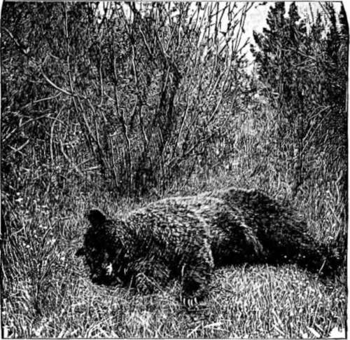

Camping And Hunting In The Shoshone. Part 4
Description
This section is from the book "Hunting", by Archibald Rogers. Also available from Amazon: Hunting.
Camping And Hunting In The Shoshone. Part 4
Two years ago we went up that valley after a band of elk, and, having killed some, set traps for bear and hunted sheep there for a week or more. One day Frank Chatfield, my hunter, and I discovered what seemed an easy pass up to the divide; and, taking all the outfit along, soon after we easily made the ascent, without one mishap in a day's march. I mention this as an instance of the unexpected; for, standing ten miles farther down the valley, its head seemed one grand mass of precipitous rocks and snow-fields. We afterward came down from a camp, three miles on the other side of the divide, to Sunlight, making one of the longest mountain marches I can remember having made in one day. It must have been thirty miles, if not more. I doubt if anyone since then has taken our trail. I know, at the time, none of the old-stagers thereabout would believe we crossed where we said we did. The old-time Tory is found out West among hunters and prospectors, as he still survives in the more civilized East.
For several years Government surveys have been gradually mapping the Yellowstone Park; but the park itself (though here and there intersected or encroached on by mountains) is a great hollow, surrounded on all sides —more especially on the west and southwest —by a wilderness of the wildest mountains within our borders, almost unexplored, so far as the Government is concerned. Here only, in the park, so far as I know, has any thorough work been attempted. There are, of course, maps issued by the Office of the Chief Engineer at Washington (the last of these bears date 1881); but to take a hunting outfit through the mountains by its help alone necessitates going slowly and feeling your way. It would not be a safe guide by which to march a column of troops. The inaccuracies of these maps I know from actually having proved them.
Before I turn away from the region of Clarke's Fork, let me say, for the benefit of anyone who wishes to hunt sheep, that there are few places where he may hope for so good success. He is not obliged to invest in a large outfit, or undertake a long trip, since it is near the railroad. Five or six days from either Stillwater or Cinnabar would bring him well up Crandle Creek, or the north fork of Clarke's Fork; and on the heads of these streams, and a stream running almost parallel to them, called Dead Indian, there are to-day, and will probably be for years, a large number of sheep. During a trip of six weeks in that region my hunter and I counted over six hundred. Let him not, however, attempt this sort of hunting unless he is in pretty good trim and has his bellows in order; for, to hunt sheep with either success or safety, he must be able to carry both himself and his rifle up and down steeps as sheer as man can climb, for from eight to twelve or even more hours at a stretch, at a mean height of about nine thousand feet; not every man who comes West can do this. I have seen one who could hold his own with any in the Adiron-dacks play out utterly; and on these steeps, often slippery and very dangerous, overfatigue adds an element of danger most undesirable, and spoils entirely the pleasure of the other members of the party. For this reason I never, when I can help it (i.e., when I can get meat any other way), begin the trip by attempting hard sheep-hunting; better wait till regular and more moderate exercises have braced the nerves and muscles; better, too, wait till each knows pretty well what he can and cannot do. If you have patience, sooner or later you may get a ram in an easy place, and so secure your "head;" but remember that following this shyest and noblest of all Rocky Mountain game animals makes larger demands on your skill and patience, as well as on your steadiness of head and hand, than any other sport.
Three more pieces of advice let me briefly give: First, never go up or down any specially steep or dangerous piece of rock when you don't feel you can return the way you came. A fall on the rocks (like Mercutio's rapier-wound, that was not "deep as a well, but yet was enough") may not be from a height that you can call a precipice, yet may be quite sufficient to spoil the trip, not for yourself only, but for your companions as well. Second, be careful when you are on "conglomerate," a very common formation in mountains.
No rock is so treacherous; its less compact formation admits of the loosening caused both by heat and ice. On limestone or on granite, or even on basalt, you can safely trust your weight to a very narrow foothold; not so with conglomerate. Any tyro in mountain-climbing knows enough to make perfectly sure of his handgrip before seeking a new rest for his foot; and then, again, make sure of the footing before reaching up or out with a disengaged hand. On the rocky formations I have mentioned, there can be little danger if caution is not neglected; but on conglomerate, extra care is necessary; hand and foot will sometimes give way suddenly and simultaneously. I had a fall in this way, two years ago, that came very near being serious; providentially, a heavy snow-field lay directly below me, and I plumped safely into its most charitable bosom. Charity was cold on that occasion, but more than comforting. It was entirely my own fault; I had broken the first rule of prudence, and had gone up a "chimney" where I could not possibly go down, and so was obliged to make a descent over a very dangerous and icy piece of conglomerate. I trust and believe I learned a lesson.
A Dead Grizzly.
The third piece of advice is worth both the others: Go slow. Go slow when you are going up; all good walkers start slow. Once get thoroughly leg-weary, and all enjoyment for the day is over. I first learned the need of going slow in 1868; we were after goats, our first goats too; there they were, not fifteen hundred feet above us, and an easy stalk. Between our camp and the mountain-foot a soft, boggy, mossy swamp, full of dead timber, stretched for above half a mile. We had Indians (never take Indians; they are not worth their, keep as hunters). We had done nothing but ride for months; all our hunting had been on horseback, a poor preparation for work after goats. To make a long story short, those Indians started off on the dead-run. We had no fresh meat, I must say in extenuation of this proceeding. I fancied I could run if they could; and, too proud to confess my forebodings, I started off in their wake. Anyone who has tried running in a swampy Selkirk valley will sympathize with the experience I went through for the next fifteen minutes, and none who have not can. Suffice it to say, I got to the foot of the steep a badly pumped lad. There a youthful, fourteen-year-old urchin, weighing about ninety pounds I should say, and looking as fresh as paint, offered to carry my thirteen-pound double-barrelled Rigby. I blessed him, and up we went, still at the run. What devilish power got into those Indians' legs I cannot to this day say; I only know that I went till first I could not speak, and then I could not breathe, and then I could not see; and when vision returned I was alone, without even the poor satisfaction of possessing a useless rifle. Of course, I never saw the goats again till they carried them into camp. But I learned two lessons, — one, never to start off at a run, or even a very rapid walk; the other, never to let a hunter I paid go ahead of me when near game. A slow, steady pace is the pace to tell. Don't stop to get your wind; second wind will come in time. Let not scenery or any other device of the evil one tempt you to sit down, or look around, or chat, etc. When you are after game that is in sight, first make your stalk, go to the highest point; the scenery is sure to look, if possible, better still when you have your game at your knees, and frequent pauses, when you are doing the hardest part of the work, do not really rest you, and do waste a great deal of time.
Continue to:
- prev: Camping And Hunting In The Shoshone. Part 3
- Table of Contents
- next: Camping And Hunting In The Shoshone. Part 5